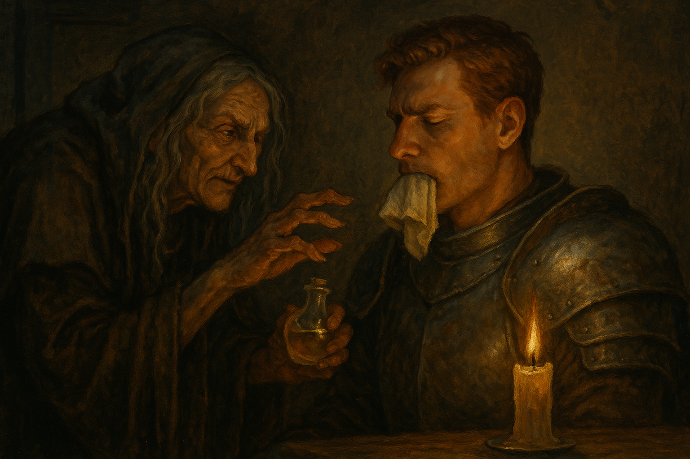

Chapter 3: A Good Place
Korringfield Reunion

Korringfield Reunion
15048.10.02
跪在爵士宅邸門口的男子，自稱為 Lemmy，是個半妖精浪客。他說他腦中有一個聲音，要他加入「台北市議員」。不過令人起疑的是，他的脖子上掛著冒險者們有些熟悉的紫色墜飾項鍊—也就是 Uko 在訣別信提到自己遺失的那條，寄宿著 Domneil 的項鍊。眾人對 Lemmy 問話，不敢肯定他是否可信。
我很會偷東西，但是這條項鍊是我撿到的。
— Lemmy, 15048.10.02
在問話到一半時，背後傳來了 Flaerry 爵士的腳步聲。大家決定先把門關上，讓動彈不得的 Lemmy 繼續跪著，先不讓爵士看見這位在他家門口洗門風的陌生男子。
爵士領著大家，來到了昨日享用晚餐的餐廳，並請廚師為大家準備一份他平日享用的早餐：一隻烤全雞。昨日已經多吃了不少蛋糕的 Midori 向廚師要了兩隻。在用餐過程中，眾人思索著到底要不要讓 Lemmy 加入冒險團隊，中途 Midori 還帶著那隻額外的烤雞到爵士家門口，試圖讓 Lemmy 吃點東西，卻發現 Lemmy 似乎連吞嚥都有困難。後來 YHWH 也來到了 Lemmy 面前，和 Midori 商討決策。兩人一同回到餐廳，決定讓大家投票表決是否讓 Lemmy 加入，而爵士將作為大家匿名投票的管道。經過大家的表決後，爵士宣布，這位他還未見過的盜賊，將加入台北市議員的行列，和大家一起繼續冒險。Usioni 和 Midori 一起到門口將 Lemmy 抬到餐廳，將他放在桌上，並要他發誓不會偷自己夥伴的東西。而在眾人認可讓 Lemmy 加入台北市議員後，Domneil 便釋放了他的枷鎖，讓 Lemmy 能夠自由活動。Lemmy 狼吞虎嚥地把整隻烤雞吃得一乾二凈。
吃飽後，Flaerry 爵士要大家準備一下，到大廳集合。他要帶大家去個好地方。眾人（尤其是 Jiaheng）興致勃勃，對於接下來要去的地方非常期待。爵士特別提醒大家不用帶錢，他會為大家出錢。
走過了市中心的街區，Flaerry 爵士停在了一個石造的拱門前，邀請大家推門進入。Jiaheng 推了開門，卻發現裡面十分吵雜，充滿了汗臭味。這和他想的似乎有所出入。爵士帶了大家進入寇林菲爾德棒球場，並在售票亭為大家各買了一張球賽的票券。今天是寇林菲爾德的主場，客場球隊是王城麥克嵩。這裡是 Paladin 離開寇林菲爾德前很喜歡來看球賽的地方。爵士和帶了錢出門的 YHWH 各自和售票亭買了彩券。
經過了幾個小時，球賽結束。寇林菲爾德大獲全勝。場內大家都非常開心。YHWH 跟著 Flaerry 爵士一起去售票亭兌換獎金，得到了 100 金幣。同時，Lemmy 開始物色身邊的陌生人是否有值得偷取的寶物，最後決定先不要搞事。
走到球場外，Paladin 告訴 Flaerry 爵士，夥伴 Jiaheng 期待的「好地方」似乎不是這種好地方，而是那種有會員制的。爵士恍然大悟，告訴 Paladin 他這就帶大家去。走了一段路，大夥停在一個沒有招牌的店門口，爵士自行推開了門。裡面是個有包廂的高級餐廳。爵士熟門熟路的走進了其中一間包廂，讓大家入座，也點了各種不同料理。然而，Jiaheng 的表情似乎又陷入了尷尬。這也不是他所想的「好地方」。餐桌上，大家吃著，也向爵士詢問了關於王城的事。爵士告訴大家，王城什麼人都有，如果要去，要很小心。不過如果有需要，報上他的名字，國王會願意幫助他們的。Paladin 也在爵士耳邊再次詢問了關於「好地方」的事。在多加提示後，爵士終於理解了，並向他們保證，會帶他們去他常去的那家 Gay Bar。Paladin 急忙撇清，Jiaheng 想去的應該不是這種。爵士只好趕緊告訴他們，附近還有另一家，叫做「七彩天堂」的店，應該就是 Jiaheng 想去的地方。
吃飽後，終於面露喜色的 Jiaheng 與大家一起跟著 Flaerry 爵士，先經過了有 Gay Bar 的巷子，在走到七彩天堂的巷口。爵士遞給了大家各 50 枚金幣，讓大家好好去開心一番。Lemmy、Midori 和 Samael 都把自己的 50 枚金幣遞給了 Jiaheng，想讓他玩得更開心。於是，Jiaheng、Paladin、Lemmy 和 Midori 便前往了七彩天堂。而 Usioni 則跟著爵士一起前往 Gay Bar。Ron 決定直接回到宅邸，Samael 在街上逛逛，而 YHWH 則跑了一趟打鐵鋪與魔法商店。
一個人類、一隻牛頭怪，以及一隻哥布林，走進了 Gay Bar。
— 一則寇林菲爾德當地笑話的開頭
Paladin 和 Midori 護送 Jiaheng 進入七彩天堂後，便暫時到巷子裡等他出來。Lemmy 則在店內東張西望，想偷點什麼東西。Jiaheng 在櫃台出示了大魔法師贈與他的兌換券後，便來了三名年輕女子（一名人類、一名半妖精，以及一名妖精），領著他走入了一間大房間，並將門關上。Lemmy 唬弄著櫃檯的服務人員，說自己剛剛不小心弄丟了一枚紅色戒指，希望對方能去幫他找找，而 Lemmy 則運用這段時間，翻了翻櫃檯內，看見了至少 4000 枚金幣，以及一小疊優惠券。Lemmy 偷走了一張優惠券。
Ron 回到爵士宅邸，敲了敲門，Rosa 開了門，熱情的歡迎他回來，而 Ron 便趕緊回到房間閉關打坐。
Usioni 與 King Knicol 跟隨著 Flaerry 爵士來到了 Gay Bar。爵士為大家點了招牌的特調，便聊了起來。Usioni 簡單詢問了更多關於王城的事，以及 Paladin 父親的事情，爵士作了簡短的回覆。後來，一名瘦高的男子前來尋找爵士，爵士便也跟著他去了店的後面。不久後 Midori 也來到了店內，和 Usioni 一起與吧檯內的服務生聊天。這名服務生名叫 Olivar，是寇林菲爾德當地人。Usioni 和 Midori 打聽了剛剛來找爵士的那名男子，叫做 Kevin，也是土生土長的寇林菲爾德人，不過似乎有著不太可告人的工作內容。後來，一名壯碩男子前來和 Usioni 搭話，Usioni 則轉將 King Knicol 介紹給了這名男子。男子見到狀況有些不對勁，便很快離開了。
離開七彩天堂的 Paladin，看見巷子口走來了兩個人影。那兩人，似乎是他的兩位哥哥，為了避免正面接觸，他便躲了起來，目送他們兩人遠離巷子。Lemmy 此時正好走了出來，和 Paladin 簡單聊了一下，接著便離開，去寇林菲爾德的盜賊公會。公會內（看起來）沒有人，只有高懸的排行榜，而 Lemmy 的名字沒有在上面。Lemmy 也看了看任務表，發現目前沒有尚未解決的任務。不過大約兩週後，這裡似乎會有個大慶典，有不少外地人會來，被公會認定是適合偷東西的好時機。Lemmy 拿了張紙，把自己近期偷的東西用賊話寫了下來，塞在公會內辦公室的門縫。在他轉頭回來後，發現紙條似乎已經不見了。
YHWH 回到了七彩天堂的巷內，看見 Paladin 正在等待 Jiaheng。Paladin 告訴他自己剛剛似乎看見了一隻黑貓，想起他有重要的事，必須跟隨這那隻黑貓走，但是又怕 Jiaheng 走丟，於是不放心，才待在這裡。YHWH 承諾會幫忙顧著 Jiaheng，於是在黑貓再次出現後，Paladin 便義無反顧地跟了上去。
Jiaheng 踏出七彩天堂時，已經是大約兩小時後了。雖然身體依然直挺挺的，他卻感到體內有股不舒服感，不確定是不是出了什麼狀況。
Paladin 跟著黑貓，穿梭在寇林菲爾德錯綜復雜的小巷，直到他也認不得這些巷子了。黑貓停在了一間再普通不過的屋子前，坐了下來。Paladin 輕易推開了門，進入了漆黑的屋子內，裡頭只有一根點燃的蠟燭照明著。Paladin 喊了一聲後，房內的另一扇門打了開來，是昨日見到的老太太。老太太示意 Paladin 席地而坐。他向 Paladin 確認了昨日談好的交易，遞出了一個空瓶子，告訴 Paladin 要把這瓶子內裝的東西，讓他父親在一日內吞進肚子裡。老太太又遞出了另一個裝滿藥水的瓶子，要 Paladin 喝下去，當作等等的麻藥，並遞給他一條毛巾，以免等等麻藥效果不夠，疼痛感太強烈時可以咬住。
Paladin 一口喝下了麻藥，意識似乎就停在了這一刻。